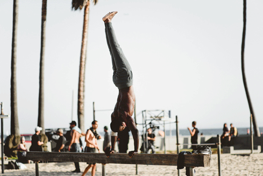

There are some rules you should always follow when travelling, whether you’re train-hopping through Europe or backpacking in Southeast Asia. Let’s call them the golden rules of travel.
1. Take risks
Bungee jumping isn’t for everyone, and nor is leaping from a perfectly good plane. But you don’t have to be an adrenaline junkie (or even do anything remotely dangerous) to take a few risks while travelling.
You could skip the Eiffel Tower in favour of a few lesser-known sights, or simply avoid Paris altogether and check out a sleepy backwater that gets far fewer visitors.
Sure, there’s a risk that you might be disappointed when you arrive, but the potential rewards are worth it. You might find a perfect café, get a beautiful view all to yourself, or wind up meeting the person of your dreams. For better or worse, stories get more interesting when you leave the beaten track.
2.Try something new every day
The bad thing about staying at home is that routine sets in, and it gets increasingly difficult to spice up daily life. That’s why people go to Zumba classes.
When you’re travelling, though, you’re exposed to new sights, smells, flavours and experiences all the time. Make it a rule that you’ll try something new every day, and at least if you do end up back at Zumba, you’ll have a nice spring in your step.

3. Make connections
Sterile jet planes and touristy resort hotels make it easy to whizz around the world without really ever meeting local people. Tear yourself away from the pool for an hour or two and try to make connections, whether it's with your Airbnb host or a trader at the local market.
You’ll be surprised by how much you can discover; there are friendly, welcoming people all over the world, and they’re often just as keen to learn from strangers as you are.
4. Tread lightly
“Leave only footprints,” says the old mantra. That’s easier said than done when you have to drink bottled water to avoid getting a stomach bug. Swig from disposable bottles for a few months and you’ll create a nasty pile of plastic waste, which will stay in your holiday destination long after you’ve departed (around 500 years, according to most estimates).
We’re not saying that you should drink straight from the tap in New Delhi in a bid to save the planet (definitely don’t do that), but it’s good to remember that as a visitor, you can have a disproportionately high impact on the environment. Tread as lightly as you can, and think carefully about what you’re leaving behind.

5. Give something back
Volunteering abroad isn’t always as simple as it sounds. You’ve got to consider things like visas, travel insurance and background checks. Usually, there are fees. But you don’t always have to be a paid-up ‘volunteer’ to do something good for the place you’re visiting.
It could be as simple as helping locals clean up a beach, or donating a few books to kids who want to read. A little bit of effort can go a long way, and you don’t always need the help of an NGO to make a big difference.
6. Remember that expensive isn’t always better
It’s nice to splash out – you’re on holiday, after all. The thing is, spending more cash doesn’t necessarily lead to better travel experiences. Often it’s the cheap seats that lead to the best encounters with people. And it’s usually the shabby, $20-a-night hotels that create those lasting memories.
7. Pack lightly
It’s true: you might need eight pairs of jeans and 14 t-shirts for a two-week trip away. But it isn’t very likely. Carrying less stuff around is almost always a good thing when travelling (your back will thank you) and as our guide to packing light shows, you don’t need half of the expensive gadgets that are doing the rounds online.
8. Take photos... thoughtfully
Photos capture all of those small details that can get lost in the fog of time. Spend your whole trip squinting down the lens of your camera, however, and you won’t give yourself a chance to create proper memories.
Remember also that people, however exotic you may think they are, don’t usually appreciate having their picture taken by strangers. If in doubt, ask – or just forget the photo and flash them a smile instead.